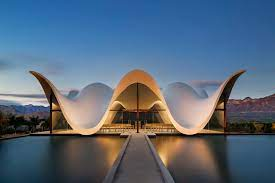
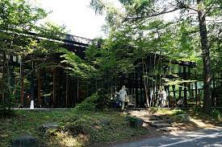

Arquiteturas Típicas
têm se associado a uma variedade de movimentos sociais e comunitários, especialmente nos países em desenvolvimento e subdesenvolvimento
Clique aqui

Arquiteturas Modernas
é uma vanguarda bastante ampla que tem como principal fundamento utilizar itens simples para construções surpreendentes e com designs à frente de sua época.
Clique aqui

Arquiteturas Orgânicas
representa a busca por espaços próximos ao natural e, além de ser uma arquitetura de baixo impacto ambiental a mesma influencia na percepção do espaço.
Clique aqui